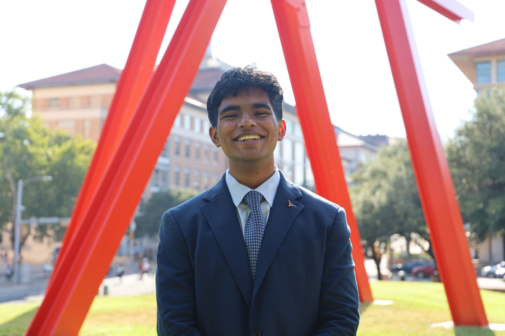
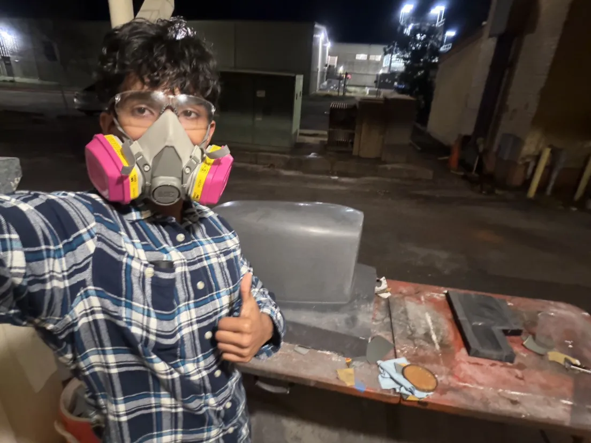

ChE · Class of December 2027
I build tools that connect engineering physics to commercial decisions. My work spans computational modeling, deployed machine learning systems, and refinery process analysis. Currently interning at Valero Energy, Ardmore OK as a Valero Scholar.


UT Austin · Chemical Engineering · Sanding sidepod moulds for LHR
I am a sophomore Chemical Engineering student at UT Austin. My work sits at the boundary between physical simulation and data-driven modeling, with experience across high-performance computing, computational fluid dynamics, and deployed machine learning.
At the Oden Institute for Computational Engineering and Sciences, I built automation workflows for large-scale HPC simulation pipelines. With Longhorn Racing Formula SAE, I developed CFD and FEA tooling alongside hybrid physics-ML models for performance prediction.
Through VoltrixEdge / Racify, I shipped a production model combining Arrhenius kinetics with gradient-boosted trees, reaching R² = 0.94 on real-world thermal data. This summer at Valero Ardmore I am applying that analytical approach to refinery environmental engineering.
Physics-constrained ML model combining Arrhenius reaction kinetics with gradient-boosted trees. Deployed production via VoltrixEdge / Racify. Demonstrates that embedding domain physics into feature engineering improves generalization for thermal systems.
Research at UT Austin's Oden Institute. Developed automation workflows for high-performance computing simulation pipelines, reducing manual overhead in large-scale computational experiments.
Aerodynamic and structural simulation tooling for Longhorn Racing Formula SAE. Hybrid physics-ML models predict performance outcomes with reduced simulation cost by combining FEA structural data with learned correction terms.
Building emissions estimator v1 through v4. Establishing a public GitHub with deployable artifacts. Connecting with crude analysts, supply chain professionals, and traders at Valero, Chevron, Shell, and ExxonMobil. Reading Oil 101 (Downey) and completing Elevify Oil and Gas coursework.
Environmental Engineering intern at a full-complexity refinery running CDU, FCC, hydrotreating, and sulfur recovery. Building a compliance cost model on real plant data and targeting a conversation with the crude supply or commercial team before week 8.
Core courses: CHE 363, M 427L, CHE 253M, CHE 364S Process Safety, CHE 359 Energy Policy. Summer 2027 recruiting begins week one of August 2026. Targets include ExxonMobil R&T, Emerson/AspenTech, Chevron Supply and Trading, and Shell process modeling.
Targeting ExxonMobil Modeling and Optimization (Spring TX), Emerson intern rotation, or Chevron Supply and Trading analyst track.
First role at an integrated refiner focused on planning, optimization, or commercial analysis. Building refinery P&L vocabulary and counterparty relationships. Targets include Valero, Marathon, Phillips 66, and Seeq.
Crude commercial analyst building cargo book experience in West Africa, Latin America, or North American heavy crude. Mid-career targets include Vitol, Koch Supply and Trading, Trafigura, and Chevron S&T.
Open to specific, substantive conversations.
If you work in crude commercial, refinery planning, or process modeling, I am interested in one well-prepared question, not a generic ask. Reach out through any channel below.
Resume downloads are logged with a timestamp and anonymized request metadata for analytics. No personally identifying information is stored beyond what you voluntarily share via email or LinkedIn.